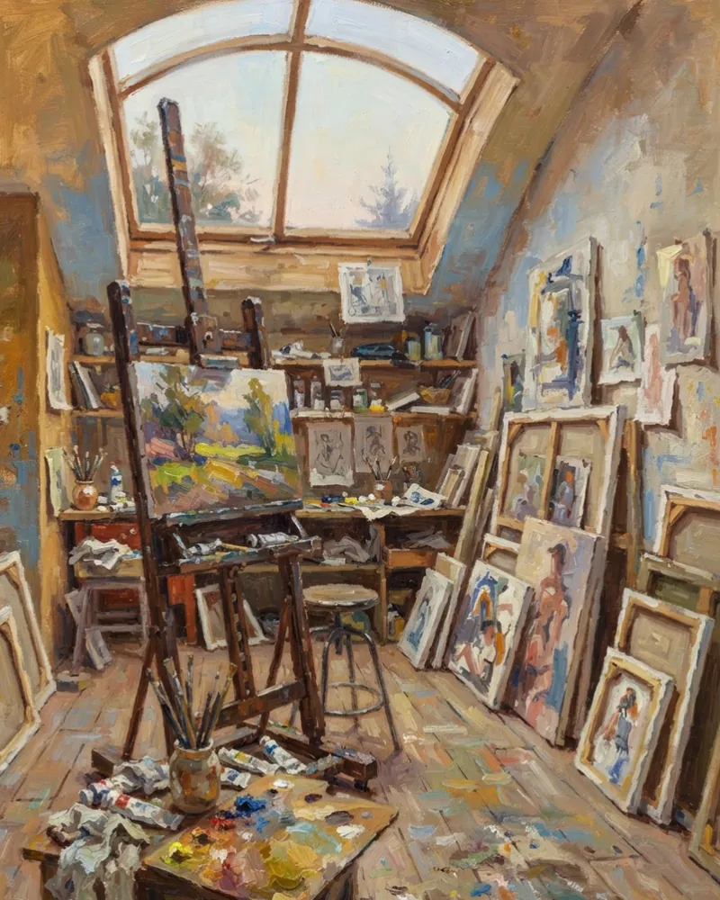

Lucien Ferrand
L'Atelier, matin
- Année
- 2022
- Technique
- Huile sur toile
- Dimensions
- 100 × 81 cm
- Disponibilité
- Visible à la galerie
L'atelier de Lucien Ferrand, baigné par la lumière de la verrière : chevalet, palette encore fraîche et toiles en attente.
Prix sur demande